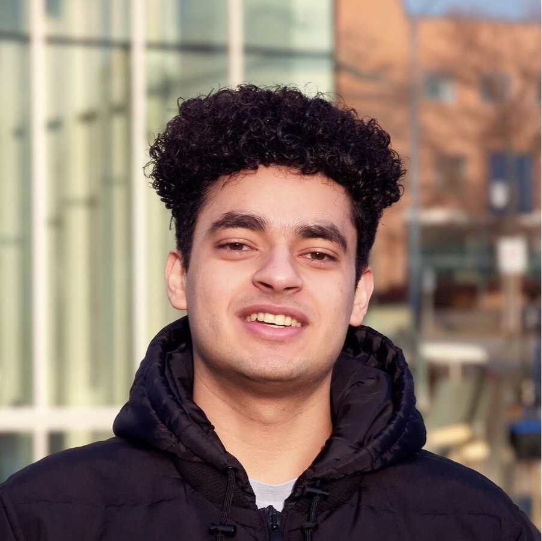
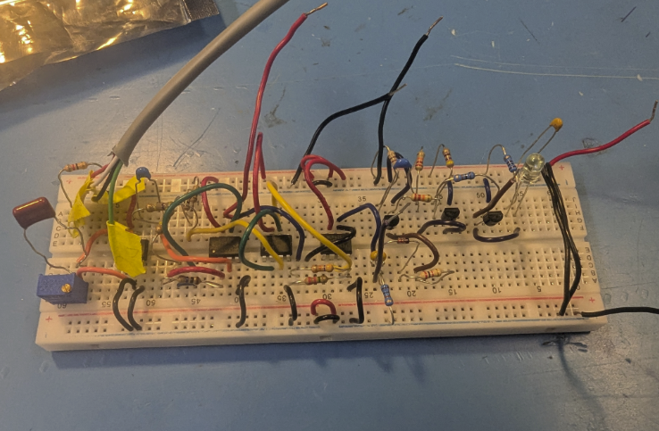

Ahmed
Shehata
I am a fourth-year Electrical Engineering student at UBC Okanagan, completing a minor in Computer Science with a concentration in Mechatronics. Engineering was not always the plan. It was a leap of faith that turned into one of the best decisions I have ever made. The people I met and the problems I ran into early on shaped both who I am and where I am headed, and what started as uncertainty became a real passion for how systems communicate, connect, and create meaning.
My focus on RF and wireless communications really clicked during my time as a Research Assistant, where I used GNU Radio to rebuild a second-year Signals and Communications course from scratch. I was not just going through material. I was turning it into something other students could actually learn from, which pushed my understanding further than any class had. That was the first time I saw the real gap between what a textbook says and what engineering actually looks like.
In my fourth year I went broad on purpose. My electives cover RF Communications, RF Integrated Circuits, Analog ICs, Antenna Design, Digital RF Communications, Machine Learning, and Deep Learning. I wanted range. The engineers I admire most are the ones who can pull ideas from different fields and connect them in ways that specialists miss.
Long term, I want to be the kind of engineer who understands both the technical and business sides of what they build. I plan to get my Professional Engineer designation, build real industry experience, and eventually go back to graduate school in either engineering or business. I genuinely think knowing how money and organizations work is just as important as knowing how circuits do.
Outside of engineering, sports are a big part of my life. I grew up playing basketball and soccer and still play both regularly. Watching them is just as much a part of it, whether that is following the NBA, tracking a Premier League season, or staying up too late for a Champions League match. The gym is another constant. Beyond that, I watch a lot of TV shows and movies, read comics, follow anime, and play video games whenever I get the chance. Some of that is solo and some of it is with my family, which honestly makes it better. None of this feels separate from engineering to me. The same curiosity that pulls me toward a new series or a good game is the same thing that keeps me reading about RF systems or trying to understand how markets work.
Skills and Areas of Focus
RF and Communications
Software and Tools
Engineering
Course Projects
Click any project to read the full story
The Challenge: Detecting a Heartbeat with Analog Circuits
Every time the heart beats it pushes a pulse of blood through the arteries, and that pulse subtly changes how much infrared light the skin absorbs. If you shine an IR emitter against a finger and measure the reflected intensity with a photodiode, you can actually see the heartbeat as a tiny fluctuation in the detected current. This is photoplethysmography, or PPG, and it is the same principle behind every modern fitness tracker and pulse oximeter.
In ENGR 352, our task was to build a PPG heart rate sensor from scratch using only discrete analog components. No microcontrollers, no digital shortcuts. The photodiode current sits in the nanoamp range, and getting from that near-invisible signal to a clean LED flash for every heartbeat required four carefully engineered stages, each one feeding directly into the next.
What We Were Asked to Build
The project ran across four successive lab sessions. Each one delivered a working circuit block that fed directly into the next. The final design had to run off a single 5 V USB supply, reliably detect a real human pulse, and flash an LED for the right duration on each beat using only components available in the lab. My partner and I handled the full workflow at every stage: theoretical analysis, LTSPICE simulation, breadboard build, and oscilloscope verification.
The Build, Stage by Stage
Transimpedance Amplifier
The photodiode puts out a DC current of about 1 µA with a heartbeat signal of only 25 to 100 nA sitting on top of it. We built a transimpedance amplifier that converts that current into a voltage using an op amp with a megaohm feedback resistor. A small feedback capacitor rolls off high frequency noise and keeps the circuit from oscillating. We also soldered the optical sensor by hand, positioning the photodiode flush against the IR emitter inside a heat shrink shroud to block direct IR leakage.
Bandpass Filter and Gain Stage
The output of Stage 1 had a large DC offset sitting on top of the signal, which was not something a comparator could trigger on cleanly. Stage 2 stripped that away using an AC coupled gain stage and amplified the remaining heartbeat signal to about 1 V peak. A resistor divider set the common mode input to 2.5 V and the gain was tuned by hand based on what the real sensor was putting out, giving us a bandpass response across both stages together.
Hysteretic Comparator
We needed to turn the smooth analog heartbeat waveform into a clean edge that the monostable could trigger on. A comparator with positive feedback gave us two trip points around a 2.5 V reference, so the output only switched when the signal clearly crossed the band. That got rid of false triggers from noise and gave us a clean 0 to 5 V square wave that fired exactly once per beat.
Monostable Multivibrator and LED Driver
A differentiator and isolation diode pulled out only the positive rising edges so the monostable fired once per beat. Two NPN BJTs in a cross-coupled configuration held the output high for a duration Ton set by the RC time constant. We calculated Ton = 167.3 ms analytically targeting roughly 20% duty cycle at 72 BPM. Simulation gave 166 ms and the physical build came in at 170 ms, within 2% of the prediction. A third transistor drove the green LED through a current-limiting resistor, giving a visible flash for every heartbeat.


What We Built and What It Proved
The final circuit detected a real human pulse and produced a consistent LED flash for every heartbeat, with a measured Ton within 2% of the theoretical prediction. No adjustments were needed after assembly. The design worked on the first build. More than anything, the project showed the value of testing each block independently before putting everything together. When we finally integrated the full system, it just worked.
The Problem: Amplifying Without Adding Noise
In any wireless receiver, the first thing the antenna connects to is a low noise amplifier. The LNA amplifies the incoming signal before anything else in the chain sees it. The problem is that every component adds noise, and if the first amplifier adds too much, nothing downstream can fix it.
This project asked me to design a 5 GHz LNA from scratch in AWR Microwave Office using a generic BiCMOS process with heterojunction bipolar transistors. The targets were tight: noise figure below 2 dB, gain above 20 dB, input return loss below negative 15 dB, and output return loss below negative 10 dB, all from a single 1.8 V supply across a 200 MHz bandwidth.
What I Was Asked to Design
Labs 3 and 4 were a two-part individual project. Lab 3 covered the common-emitter topology: bias optimization, device scaling, emitter degeneration, and input matching. Lab 4 built on that by adding a cascode stage and emitter follower to push gain past 20 dB while keeping noise figure in spec. The whole thing was simulation only in AWR with no physical hardware.
The Design Journey
Finding the Minimum Noise Figure Bias Point
Starting with a single HBT transistor and no matching networks, I swept the base bias current from 0 to 0.15 mA and plotted noise figure at 5 GHz. The minimum landed around Ibias = 0.0075 mA at roughly 7.84 dB, which was way too noisy on its own and pointed straight at the need for device scaling.
Scaling to 24 Fingers to Align Zopt with 50 Ω
A single-finger transistor biased for minimum noise has an optimum source impedance far from 50 Ω, so a standard source cannot drive it at its noise minimum. I paralleled two devices at N=12 each for 24 total fingers. That shift pushed the optimum noise impedance toward 50 Ω and dropped the minimum NF from 7.84 dB down to about 1.61 to 1.68 dB purely from choosing the right device size.
Adding LE and LB to Hit 50 Ω Input Impedance
Even after scaling, Re{Zin} was only about 10 Ω. A small emitter degeneration inductor LE pulled it to 50 Ω, calculated as LE = RS/ωT using fT from the transistor Bode plot at 15.1 GHz, giving LE around 0.549 nH after tuning. Voltage gain dropped from 5.98 V/V to 2.51 V/V as a result. A series base inductor LB of 0.161 nH then cancelled the remaining input reactance, pushing S11 to negative 59 dB with only 8.67 dB of gain.
Adding Q2 and Q3 to Push Gain to 21 dB
A cascode transistor was inserted between the CE output and the load to eliminate the Miller effect. A resonant tank with LT = 1 nH and CT = 0.52 pF presented about 314 Ω to the collector, giving the high-impedance load needed for voltage gain. An emitter follower was added as an output buffer. After tuning, the final LNA hit 21.07 dB gain, 1.78 dB NF, and better than negative 28 dB input return loss across the full 200 MHz band.


From 7.84 dB Noise to a Fully Matched 21 dB Amplifier
Starting from a single transistor with a 7.84 dB noise figure and no matching, the final cascode LNA hit 21.07 dB gain, 1.78 dB NF, and better than negative 28 dB input return loss across a 200 MHz bandwidth at 5 GHz. Every spec was met. The biggest lesson was that noise, gain, and matching are always coupled at RF frequencies. Every step involved a real tradeoff, not just a parameter adjustment.
Lab 3 — Common Emitter
Lab 4 — Cascode
What a Slot Antenna Is and Why It Is Worth Designing
A slot antenna is one of the more elegant structures in RF engineering. Instead of adding metal to radiate, you remove it. A narrow rectangular aperture cut into a conducting ground plane is driven by a voltage source across the slot, and the resulting edge currents cause the opening itself to radiate. The pattern is mathematically the complement of a dipole. They show up in radar systems, broadcast towers, aircraft skins, and increasingly in PCB ground planes for Wi-Fi, GPS, and 5G.
In ENGR 473, the project was not just about hitting a spec. It was a parametric study: build a working simulation in AWR's EM solver, then vary the ground plane geometry systematically and explain what happens to the radiation pattern each time.
Simulate, Vary, and Interpret
The assignment was to build a simulation of a half-wavelength slot antenna resonating at 2.4 GHz, then vary the ground plane width and length independently across multiple configurations. For each one I had to analyze the 3D radiation pattern, the polar plots in the XZ and YZ planes, and the input impedance curve. The goal was not just to find a good design but to understand what actually controls the pattern.
The Simulation Journey
Building the Baseline Configuration
The starting point was a finite ground plane at 0.8λ by 0.8λ with the slot centred at 0.447λ long by 0.1λ wide. Several early attempts failed to produce clean patterns due to incorrect boundary settings and ground planes that were either too big or too small.
Comparing 0.8λ × 0.8λ Against 3λ × 3λ
The 0.8λ ground plane produced the closest result to a theoretical donut pattern, with a maximum directivity of about 5.74 dBi. Scaling up to 3λ by 3λ broke the pattern into a multi-lobe structure with grating lobes in unexpected directions. A very large ground plane introduces edge diffraction that competes with the aperture radiation.
Converging on 0.48λ × 0.6λ for the Cleanest Pattern
The final design used a ground plane of 0.48λ by 0.6λ with the slot at 0.447λ by 0.1λ. This produced the cleanest toroidal radiation pattern of all configurations tested, with confirmed self-resonance at 2.397 GHz and Re(Z) peaking at approximately 418 Ω, consistent with Babinet's principle.


What the Study Demonstrated
The parametric study confirmed that the ground plane is not a passive backdrop for a slot antenna. It is an active part of the radiating structure. Both expanding and shrinking it in specific directions predictably deforms the pattern in ways that can be explained using diffraction and boundary current arguments. The final design at 0.48λ by 0.6λ gave the cleanest omnidirectional response of everything tested, with confirmed resonance at 2.397 GHz.
The Problem: Teaching a Computer to Sort by Shape
Imagine a conveyor belt moving Lego pieces past a camera and a sorting arm that needs to route each one to the right bin in under a second. On a clean, perfectly aligned dataset, logistic regression on raw pixels worked fine. Then Stage 2 introduced real data: rotated pieces, off-centre framing, variable lighting, pale bricks on white backgrounds. Accuracy dropped to 54%, barely better than guessing. The problem shifted from building a classifier to figuring out how to describe the shape of an object regardless of where it sits or which way it faces.
From Pixels to Geometry
100% training accuracy on clean data, 54% on real data
Logistic regression on raw 64x64 grayscale pixels worked perfectly on a clean, aligned dataset. When applied to realistic rotated and off-centre images, it collapsed immediately. Pixel templates are fragile. Any rotation or shift rearranges which pixels have which values and the classifier has nothing stable to learn from.
17-Feature Pipeline Using Hu Invariant Moments
We dropped pixel values entirely and extracted 17 geometry-based features: area, perimeter, aspect ratio, circularity, seven Hu invariant moments, and intensity statistics. All of them are rotation and translation invariant. Otsu thresholding produced a clean binary mask for each piece before feature extraction.


33 Percentage Points Better with Fewer Features
Switching from raw pixels to the engineered pipeline improved test accuracy from 53.70% to 87.04% using the same underlying classifier. The gap between training and test accuracy also shrank, which meant the model was genuinely generalizing rather than memorizing. Hu invariant moments were the most important contribution. The remaining errors all traced back to one root cause: Otsu segmentation breaks down when the piece and background are too similar in intensity.
Stage 1 — Raw Pixels
Stage 2 — Engineered Features
The Challenge: Build a Real Motor From Scratch
The ENGR 320 design project gave groups a roughly $100 budget and asked them to build a working electric motor that could spin for at least 20 seconds. The brief made clear that brushless DC motors typically receive the highest grades because they demonstrate a more complete understanding of electromagnetic principles. Our group of six decided from day one that we were not building anything simple. We designed a fully custom outrunner BLDC motor with a 3D printed structure, a wound 3-phase stator, a permanent magnet rotor, and a custom PCB controller running field-oriented control.
From CAD Model to Spinning Motor
CAD, Pole Configuration, and Magnetic Circuit Choices
We chose the outrunner topology because the rotor spinning on the outside gives a higher torque-to-weight ratio than an inrunner. A 9-coil to 24-pole ratio was chosen deliberately to reduce cogging torque and produce smooth rotation at low speeds. All structural parts were 3D printed in PLA with mild steel rod segments pressed into the stator slots to concentrate magnetic flux through each coil.
Hand-Winding 9 Coils and Closing the Stator
Each of the 9 stator coils was wound by hand using enamelled copper wire. Getting consistent turn counts across all coils was genuinely difficult since uneven coil resistance degrades phase balance and increases vibration. Closing the rotor shell around the stator with a controlled air gap was the other major challenge. Too large a gap drops torque; misalignment causes vibration.
Sensorless FOC PCB and Live Demo
Rather than using a commercial ESC, one team member designed a fully custom double-sided PCB in KiCad integrating an STM32 microcontroller and a dedicated motor driver IC. The firmware implemented sensorless field-oriented control using the STM32 Motor Control SDK. The motor ran cleanly well beyond the 20-second minimum at the live class demo.


A Working Outrunner
The motor ran under its own power and drove a propeller at the live class demo well past the 20-second threshold. The 9-coil to 24-pole configuration produced smooth, low-vibration rotation and strong torque at the shaft. The hardest parts were not the electromagnetic design but the physical execution: consistent coil windings, closing the rotor without misalignment, managing 3D print tolerances, and the PCB import timeline. Working through all of that as a team taught each of us more about how motors actually behave than any lecture could.
Let's Connect
Whether you have a question about my work, want to collaborate on a project, or are looking to connect professionally, I would love to hear from you.